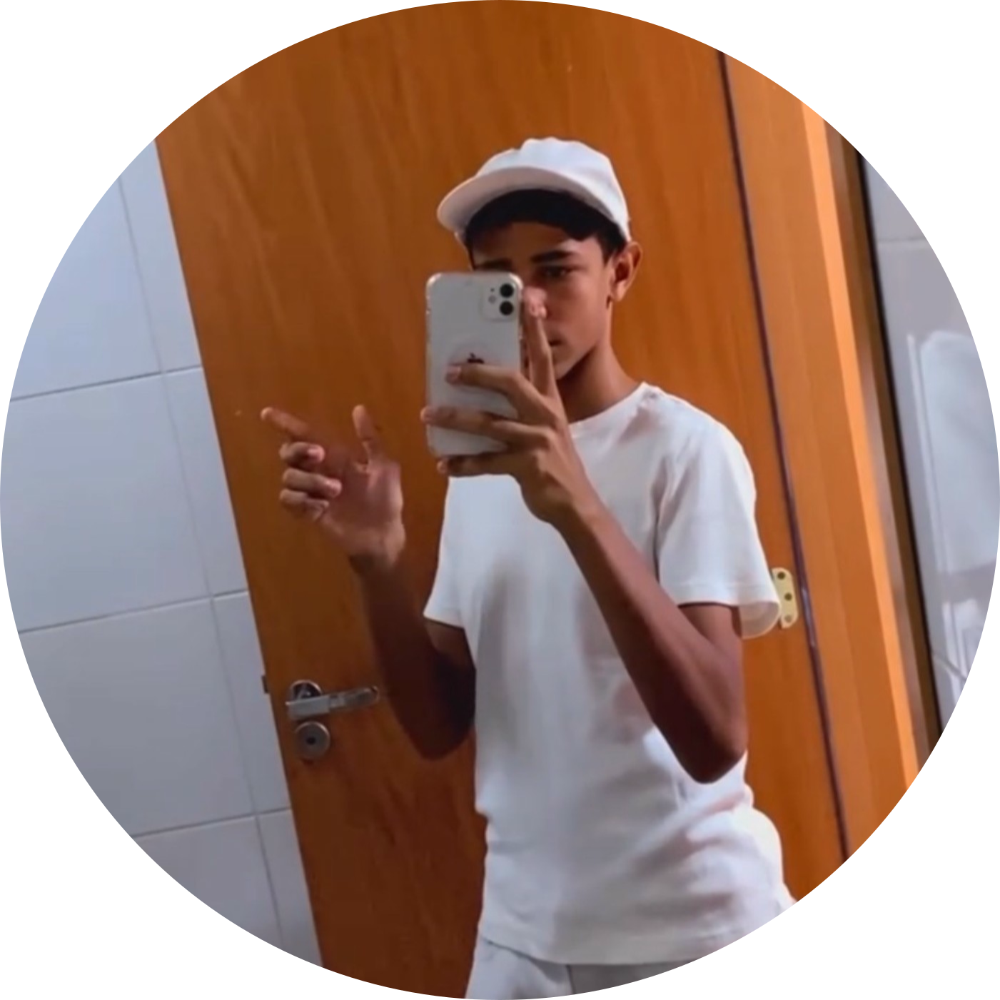

desenvolvedor
web
Transformando ideias em código
Sou o Brayan Felipe, estudante de desenvolvimento web.
Crio layouts limpos, bem estruturados e focados na experiência do usuário.
Sempre buscando novos desafios para evoluir meu código a cada projeto.